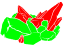
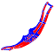
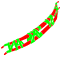
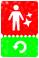
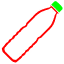

หน้าแรก › ไอเทม
 วัตถุดิบ ใช้ได้
วัตถุดิบ ใช้ได้
พืช ไม้ ชิ้นส่วนสัตว์ หิน แร่ โลหะ วัสดุแปรรูป เมล็ดและปุ๋ย — เก็บจากไหน ทำจากอะไร ตัวอย่างพร้อมไอคอน
วัตถุดิบคือของที่ใส่ในช่องของสูตร คราฟต์ · ทำอาหาร · ก่อสร้าง — ช่องของสูตรระบุ แท็ก ที่ต้องการ ของชิ้นไหนมีแท็กตรงก็ใส่ได้ และ คุณสมบัติ ของวัตถุดิบหลักจะส่งต่อให้ของที่ได้
พืชและไม้
เก็บด้วยมือเปล่า มีด ขวาน หรือเลื่อย (การเก็บของ) · หาได้ 30 แบบ
| ชื่อ | เลเวลได้ถึง | ได้จาก | |
|---|---|---|---|
| ต้นไผ่ | 60 | เก็บจาก ไม้ไผ่ · เสบียงองค์กร | |
| เมล็ดโกโก้ | 60 | เก็บจาก ต้นโกโก้ | |
| กิ่ง | 70 | เก็บจาก ต้นฮอร์น, พุ่มไม้หนาม, ต้นขนนก และอื่น ๆ · สิ่งปลูกสร้างเก็บผลได้ · เช็กชื่อ · เสบียงองค์กร | |
| กิ่งยาว | 70 | เก็บจาก ต้นฮอร์น | |
| กิ่งเชอร์รี่โดเนเรียม | 70 | เก็บจาก ต้นเชอร์รี่โดเนเรียม | |
| กิ่งแข็ง | 70 | เก็บจาก ต้นหญ้ามอส | |
| ก้านปอ | 70 | เก็บจาก ปอ | |
| ก้านอ้อย | 70 | เก็บจาก อ้อย | |
| ท่อนซุง | 70 | เก็บจาก ต้นพลับ, ต้นขี้เถ้า, ต้นไม้ที่กระจัดกระจาย และอื่น ๆ · สิ่งปลูกสร้างเก็บผลได้ · เช็กชื่อ · เสบียงองค์กร | |
| ท่อนซุงต้นสน | 70 | เสบียงองค์กร | |
| ท่อนซุงในหนองบึง | 70 | เสบียงองค์กร | |
| น้ำเลี้ยง | 70 | เก็บจาก ต้นสน, สนเฟอร์แดง · เสบียงองค์กร | |
| ฝ้าย | 70 | เก็บจาก ต้นฝ้าย · เสบียงองค์กร | |
| มอส | 70 | เก็บจาก กรวดที่เต็มไปด้วยต้นมอส, ต้นหญ้ามอส | |
| รากสำหรับหายใจ | 70 | เสบียงองค์กร | |
| รากแข็ง | 70 | เสบียงองค์กร | |
| เปลือกไม้ | 70 | เสบียงองค์กร | |
| ใบบัว | 70 | เก็บจาก ใบบัว | |
| ใบไม้ | 70 | เสบียงองค์กร | |
| ใบไม้ปลายแหลม | 70 | เสบียงองค์กร |
ชิ้นส่วนสัตว์
แล่จากซากสัตว์ที่ล่าได้ — ชนิดและจำนวนต่างกันตามสัตว์ (สัตว์ป่า) · หาได้ 40 แบบ
| ชื่อ | เลเวลได้ถึง | ได้จาก | |
|---|---|---|---|
| ตะขาบ | 60 | เก็บจาก ต้นไม้ที่กระจัดกระจาย | |
 | แมงมุม | 60 | เก็บจาก ต้นใยแมงมุม |
| กระดูกขาขนาดใหญ่ | 70 | เก็บจาก ไทรเซราทอปส์ที่เน่าเปื่อย, โปรโตเซอราทอปส์ · ชำแหละ โปรโตเซอราทอปส์ · เสบียงองค์กร | |
| กระดูกขาสัตว์กินเนื้อ | 70 | ชำแหละ (สัตว์ 36 ชนิด) · เสบียงองค์กร | |
| กะโหลกสัตว์กินเนื้อ | 70 | เสบียงองค์กร | |
| งา | 70 | เก็บจาก แมมมอธ · ชำแหละ ช้างงาสั้น, แมมมอธ · เสบียงองค์กร | |
| ซี่โครง | 70 | เสบียงองค์กร | |
| ซี่โครงปลายแหลม | 70 | เครื่องเร่งวาร์ป | |
| ซี่โครงสัตว์กินเนื้อ | 70 | ชำแหละ (สัตว์ 14 ชนิด) · เสบียงองค์กร | |
| ถุงเก็บพิษ | 70 | เสบียงองค์กร | |
| รังตัวไหม | 70 | คราฟต์ (โต๊ะทำงาน) | |
| หนัง | 70 | เสบียงองค์กร | |
| หนังหนา | 70 | เครื่องเร่งวาร์ป · เสบียงองค์กร | |
| หัวกะโหลก | 70 | เก็บจาก พาคีเซฟาโลซอรัส, โปรโตเซอราทอปส์ · ชำแหละ (สัตว์ 24 ชนิด) · เสบียงองค์กร | |
| เกราะเกล็ดลายขาว | 70 | เสบียงองค์กร | |
| เขา | 70 | เก็บจาก โบนูซอรัส, เมกะโลซีรอสเพศผู้ · ชำแหละ (สัตว์ 13 ชนิด) · เสบียงองค์กร | |
| เขี้ยว | 70 | ชำแหละ (สัตว์ 32 ชนิด) · เสบียงองค์กร | |
| เอ็น | 70 | เก็บจาก เมกะโลซีรอสเพศผู้ · ชำแหละ (สัตว์ 9 ชนิด) · เช็กชื่อ · เสบียงองค์กร · กับดัก | |
| แผงกระดูกเล็ก | 70 | ชำแหละ ลูกเตาเจียงโกซอรัส, ลูกสเตโกซอรัส | |
| ไข่ | 70 | เก็บจาก ไข่สัตว์ · เช็กชื่อ · เสบียงองค์กร · กับดัก |
หิน แร่ และโลหะ
หินและแร่เก็บด้วยอีเต้อหรือค้อน · โลหะผสมหลอมที่ เตาเผา · อัญมณีเจียที่โต๊ะทำอัญมณี · หาได้ 39 แบบ
| ชื่อ | เลเวลได้ถึง | ได้จาก | |
|---|---|---|---|
| กำมะถัน | 60 | คราฟต์ (โต๊ะทำงาน) · เก็บจาก ก้อนกำมะถัน · เสบียงองค์กร | |
| ดินประสิว | 60 | คราฟต์ (โต๊ะทำงาน) · เก็บจากธรรมชาติ · เสบียงองค์กร | |
| ทองเหลืองกัดแต่งง่าย | 60 | คราฟต์ (เตาเผา) · เสบียงองค์กร | |
| ทองแดง | 60 | เสบียงองค์กร | |
 | บุษราคัม | 60 | เสบียงองค์กร |
| ยางแข็ง | 60 | เก็บจาก ต้นยาง | |
| ลาวาแข็งตัว | 60 | เก็บจาก ลาวาแข็งตัว · เสบียงองค์กร | |
| สำริด | 60 | คราฟต์ (เตาเผา) · เสบียงองค์กร | |
| หินแกรนิต | 60 | เก็บจาก หินแกรนิต · เสบียงองค์กร | |
| เงิน | 60 | เสบียงองค์กร | |
| เหล็ก | 60 | เสบียงองค์กร | |
| เหล็กกล้า | 60 | คราฟต์ (เตาเผา) · เสบียงองค์กร | |
| แร่เหล็กหล่อดำ | 60 | เก็บจาก แร่เหล็กหล่อดำ · เครื่องเร่งวาร์ป · เสบียงองค์กร | |
| กรวด | 70 | เก็บจาก หินก้อนใหญ่, กรวด, กรวดที่เต็มไปด้วยต้นมอส · เช็กชื่อ · เสบียงองค์กร | |
| ก้อนหิน | 70 | คราฟต์ (โต๊ะทำงาน) · เก็บจาก หินก้อนใหญ่ | |
| มรกต | 70 | คราฟต์ (โต๊ะทำงานสำหรับสร้างอัญมณี) · เก็บจาก แร่มรกต | |
| หินอ่อน | 70 | เก็บจาก หินอ่อน · เสบียงองค์กร | |
| ออบซิเดียน | 70 | เก็บจาก ออบซิเดียน · เสบียงองค์กร | |
| แร่ทอง | 70 | เก็บจาก แร่ทอง · เครื่องเร่งวาร์ป | |
| แร่ทองแดง | 70 | เก็บจาก แร่ทองแดง · เครื่องเร่งวาร์ป · เสบียงองค์กร | |
| แร่เงิน | 70 | เก็บจาก แร่เงิน · เครื่องเร่งวาร์ป · เสบียงองค์กร | |
| โคลน | 70 | เก็บจาก หลุมโคลน · เสบียงองค์กร | |
| โคลนสีเทา | 70 | เก็บจาก โคลนสีเทา · เสบียงองค์กร | |
| ไข่มุก | 70 | คราฟต์ (โต๊ะทำงานสำหรับสร้างอัญมณี) · เก็บจาก หอยตลับ · ภารกิจองค์กร |
วัสดุก่อสร้าง
ไม้กระดาน อิฐ เชือก ตะปู กรอบประตู/หน้าต่าง ฯลฯ · หาได้ 92 แบบ
| ชื่อ | เลเวลได้ถึง | ได้จาก | |
|---|---|---|---|
| กระดูกแบบตัดยาว | 60 | คราฟต์ (มือ) · เสบียงองค์กร | |
| กำแพงหิน | 60 | คราฟต์ (โต๊ะทำงาน) | |
| ตะปูโลหะ | 60 | คราฟต์ (เตาเผา) · ร้านค้า (แพ็ก) · เสบียงองค์กร | |
| บานพับหิน | 60 | คราฟต์ (โต๊ะทำงาน) | |
| ผนังหินที่มีลวดลายแบบขัดเงา | 60 | ร้านค้า (แพ็ก) | |
| ผนังแผ่นไม้ที่ตัดแต่งแล้ว | 60 | คราฟต์ (โต๊ะทำงาน) | |
| พื้นหินที่มีลวดลาย | 60 | คราฟต์ (โต๊ะทำงาน) | |
| พื้นแผ่นไม้ที่ตัดแต่งแล้ว | 60 | คราฟต์ (โต๊ะทำงาน) | |
| สายหนัง | 60 | คราฟต์ (มือ) · เช็กชื่อ · เสบียงองค์กร | |
| หลังคาหนัง | 60 | คราฟต์ (โต๊ะทำงาน) | |
| หลังคาแผ่นไม้ | 60 | คราฟต์ (โต๊ะทำงาน) | |
| เครื่องประดับติดแปะ | 60 | คราฟต์ (โต๊ะทำงาน) · เสบียงองค์กร | |
| แบบแปลนเครื่องฉีดน้ำอเนกประสงค์ทรงสี่เหลี่ยมที่ฉีดเป็นวงกว้าง | 60 | เสบียงองค์กร | |
| แผ่นไม้ที่ถูกฟ้าผ่า | 60 | ร้านค้า (แพ็ก) | |
| ประตูกระดูกวิจิตร | 70 | คราฟต์ (โต๊ะทำงาน) | |
| ประตูเหล็กคุณภาพต่ำ | 70 | คราฟต์ (โต๊ะทำงาน) | |
| ระแนงกระดูก | 70 | คราฟต์ (โต๊ะทำงาน) | |
| หน้าต่างเหล็ก | 70 | คราฟต์ (โต๊ะทำงาน) |
ชิ้นส่วนอาวุธและเครื่องมือ
ด้าม ใบมีด หัวค้อน สายธนู ฯลฯ · หาได้ 105 แบบ
| ชื่อ | เลเวลได้ถึง | ได้จาก | |
|---|---|---|---|
| กาวถุงลม | 60 | คราฟต์ (โต๊ะทำงาน) | |
| ด้ามจับ | 60 | คราฟต์ (มือ) · เสบียงองค์กร | |
 | ตัวหน้าไม้ | 60 | คราฟต์ (โต๊ะทำงาน) · เสบียงองค์กร |
 | ปีกธนูสองชั้น | 60 | คราฟต์ (เตาเผา) · เสบียงองค์กร |
 | ปีกหน้าไม้สองชั้น | 60 | คราฟต์ (เตาเผา) |
 | หน้าไม้กระดูก | 60 | คราฟต์ (โต๊ะทำอาวุธ) |
| หัวขวานตัดเข้าเหลี่ยมโลหะ | 60 | คราฟต์ (เตาเผา) | |
| หัวขวานหินขนาดใหญ่ | 60 | คราฟต์ (โต๊ะทำงาน) | |
| หัวขวานโลหะเหลี่ยมขนาดใหญ่ 2 | 60 | คราฟต์ (เตาเผา) | |
 | หัวค้อนบดขยี้ศีรษะ | 60 | คราฟต์ (โต๊ะทำอาวุธ) |
 | หัวค้อนหนามแหลมขนาดใหญ่ | 60 | คราฟต์ (เตาเผา) |
| หัวหอกกระดูก | 60 | คราฟต์ (โต๊ะทำงาน) | |
| หัวอีเต้อกระดูก | 60 | คราฟต์ (โต๊ะทำงาน) | |
| โกลนโลหะ | 60 | คราฟต์ (เตาเผา) · เสบียงองค์กร | |
| ใบมีดจอบกระดูก | 60 | คราฟต์ (โต๊ะทำงาน) | |
| ใบมีดตัดกระดูกโค้ง | 60 | คราฟต์ (โต๊ะทำอาวุธ) | |
 | ใบมีดหิน | 60 | คราฟต์ (มือ) · ภารกิจองค์กร · เควส · เสบียงองค์กร |
 | ใบมีดเลื่อยโลหะ | 60 | คราฟต์ (เตาเผา) |
วัสดุตัดเย็บ
ด้าย ผ้า หนังฟอก · หาได้ 28 แบบ
| ชื่อ | เลเวลได้ถึง | ได้จาก | |
|---|---|---|---|
| กระดูกตัดแต่ง | 60 | เสบียงองค์กร | |
| กระดูกแปรรูป | 60 | เสบียงองค์กร | |
| กาวเจลาติน | 60 | คราฟต์ (โต๊ะทำงาน) · เสบียงองค์กร | |
| ผ้าชนิดทนทาน | 60 | คราฟต์ (เครื่องทอผ้า) · เสบียงองค์กร | |
| ผ้าหนา | 60 | คราฟต์ (เครื่องทอผ้า) · เสบียงองค์กร | |
| ริบบิ้น | 60 | คราฟต์ (เครื่องทอผ้า) | |
| สายหนังตากแห้ง | 60 | คราฟต์ (มือ) · เสบียงองค์กร | |
| หนังตากแห้ง | 60 | เสบียงองค์กร | |
| หนังติดขนฟอกแล้ว | 60 | เสบียงองค์กร | |
| หนังฟอก | 60 | เสบียงองค์กร | |
| เครื่องประดับโลหะ | 60 | คราฟต์ (โต๊ะทำงาน) · ร้านค้า (แพ็ก) · เสบียงองค์กร | |
| เชือกฟาง | 60 | คราฟต์ (มือ) · เช็กชื่อ · ภารกิจองค์กร · เสบียงองค์กร | |
| เส้นด้าย | 60 | คราฟต์ (เครื่องทอผ้า) · เช็กชื่อ · เสบียงองค์กร | |
| เส้นด้ายชุบน้ำมัน | 60 | คราฟต์ (เครื่องทอผ้า) | |
| เส้นด้ายหยาบ | 60 | คราฟต์ (เครื่องทอผ้า) | |
 | แท่งโลหะ | 60 | คราฟต์ (เตาเผา) · เสบียงองค์กร |
วัสดุอื่น ๆ
หาได้ 16 แบบ
| ชื่อ | เลเวลได้ถึง | ได้จาก | |
|---|---|---|---|
| การ์ดเปลี่ยนรูปลักษณ์ | 1 | ร้านค้า 88 T | |
 | การ์ดเปลี่ยนเพศ+รูปลักษณ์ | 1 | ร้านค้า 220 T |
| ตั๋วรีเซ็ตสกิล | 1 | ร้านค้า 630 T | |
| ก้อนโลหะ | 60 | เสบียงองค์กร | |
 | ขวด PET สะอาด | 60 | คราฟต์ (มือ) |
| ขวดพลาสติก | 60 | เก็บจาก หนูที่เน่าเปื่อย, สคังโคดัสที่เน่าเปื่อย, ลังสินค้า · สิ่งปลูกสร้างเก็บผลได้ | |
| ขี้ผึ้ง | 60 | คราฟต์ (ไฟประกอบอาหาร) · เสบียงองค์กร | |
| ยางรถ | 60 | เก็บจาก รถยนต์ | |
| รากต้นเชอร์รี่ตอนแล้ว | 60 | คราฟต์ (โต๊ะทำงาน) | |
| รากต้นเชอร์รี่โดเนเรียมตอนแล้ว | 60 | คราฟต์ (โต๊ะทำงาน) | |
| ล็อก | 60 | คราฟต์ (เตาเผา) | |
| เทียน | 60 | คราฟต์ (โต๊ะทำงาน) | |
 | เศษแก้ว | 60 | เก็บจาก รถยนต์ |
| แบบแปลนที่ฉีกขาด | 60 | ร้านค้า 150 T · เสบียงองค์กร |
เมล็ดพันธุ์
ปลูกในแปลงนา เก็บเกี่ยวแล้วได้ผลผลิตพร้อมเมล็ดคืน 1 เมล็ด (การเพาะปลูก) · ได้เมล็ดตั้งต้นจาก เสบียงองค์กร · เควส · และพืชป่าบางชนิด · หาได้ 20 แบบ
| ชื่อ | เลเวลได้ถึง | ได้จาก | |
|---|---|---|---|
| เมล็ดกุหลาบขาว | 60 | เควส | |
| สปอร์เห็ด | 70 | เสบียงองค์กร | |
| หัวพันธุ์มันฝรั่ง | 70 | เสบียงองค์กร | |
| เมล็ดกล้วย | 70 | เสบียงองค์กร | |
| เมล็ดกาแฟ | 70 | เสบียงองค์กร | |
| เมล็ดข้าว | 70 | เสบียงองค์กร | |
| เมล็ดข้าวสาลี | 70 | เสบียงองค์กร | |
| เมล็ดข้าวโพด | 70 | เสบียงองค์กร | |
| เมล็ดคาร์เนชัน | 70 | เควส | |
| เมล็ดต้นชา | 70 | เสบียงองค์กร | |
| เมล็ดต้นฝ้าย | 70 | เสบียงองค์กร | |
| เมล็ดถั่ว | 70 | เสบียงองค์กร | |
| เมล็ดปอ | 70 | เสบียงองค์กร | |
| เมล็ดฟักทอง | 70 | เสบียงองค์กร | |
| เมล็ดมะเขือเทศ | 70 | เสบียงองค์กร | |
| เมล็ดมะเดื่อ | 70 | เสบียงองค์กร | |
| เมล็ดหัวหอม | 70 | เสบียงองค์กร | |
| เมล็ดองุ่น | 70 | เสบียงองค์กร | |
| เมล็ดอ้อย | 70 | เสบียงองค์กร | |
| เมล็ดแจสมิน | 70 | เควส |
ปุ๋ย
หาได้ 7 แบบ
| ชื่อ | เลเวลได้ถึง | ได้จาก | |
|---|---|---|---|
| ปุ๋ยคุณภาพ | 60 | คราฟต์ (ถาดหมัก) · เสบียงองค์กร | |
| ปุ๋ยยุคบรรพกาล | 60 | คราฟต์ (ถาดหมัก) · เสบียงองค์กร | |
| ปุ๋ยแบบน้ำ | 60 | คราฟต์ (ถาดหมัก) · ร้านค้า (แพ็ก) · เสบียงองค์กร | |
| ปุ๋ยธัญพืชคุณภาพ | 70 | เสบียงองค์กร | |
| ปุ๋ยผลไม้ | 70 | เสบียงองค์กร | |
| ปุ๋ยหญ้า | 70 | เสบียงองค์กร | |
| ปุ๋ยเนื้อคุณภาพ | 70 | เสบียงองค์กร |